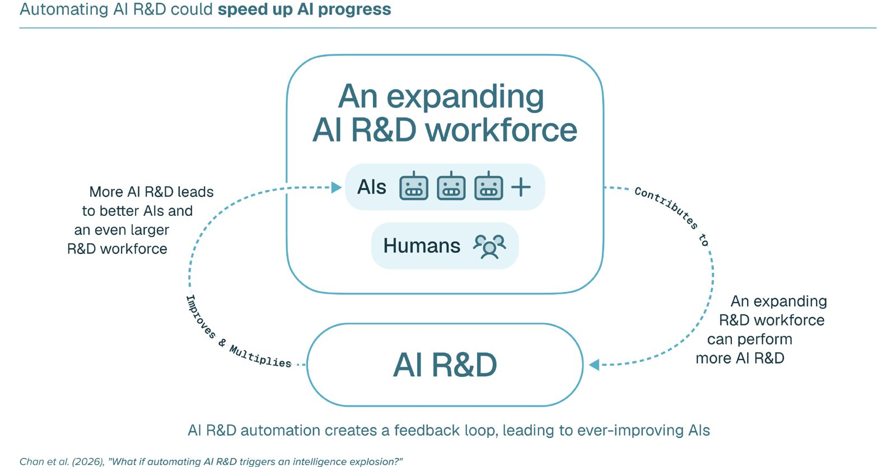
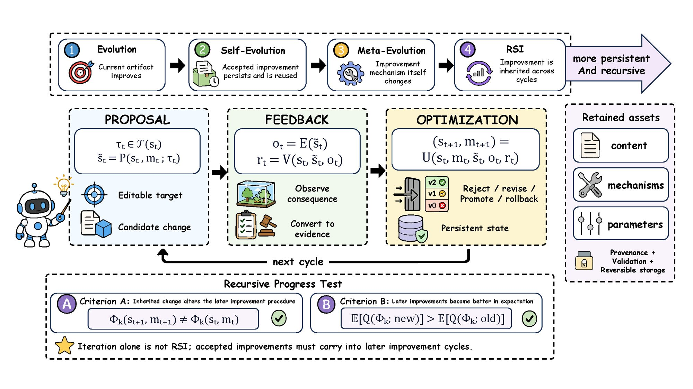
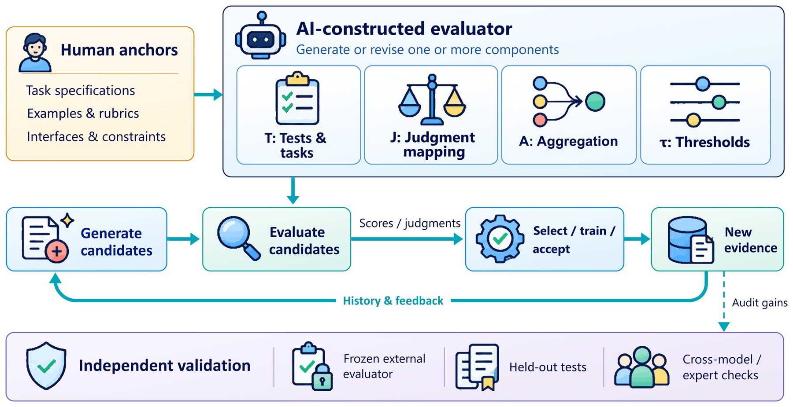
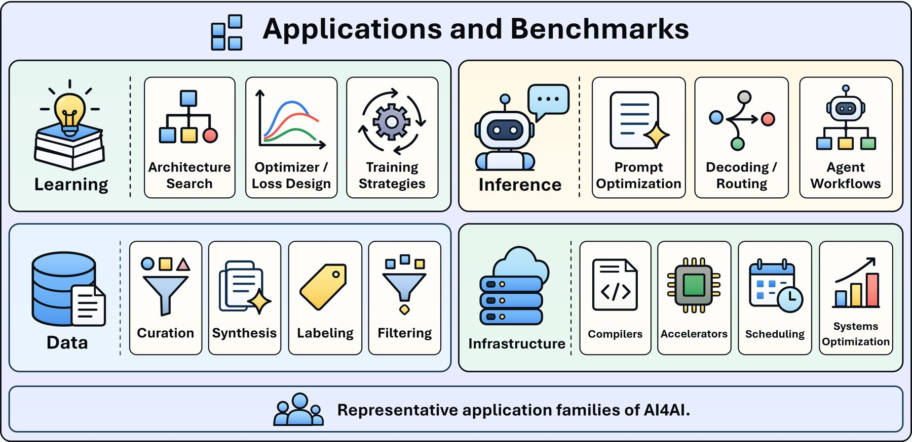

AI doing R&D for AI:
What it is, who's building it, who verifies it, and where the money goes
This page combines the overview, AI4AI analysis, AlphaEvolve, business landscape, capital view, my take and resource pack from liucao.me/rsi into 15 chapters, which you can jump between using the table of contents on the left. Each chapter matches the original page, and the original page link is given below each chapter title.
Download as a single HTML file (Images embedded, about 3 MB, viewable offline)
- All three frontier labs acknowledge that “AI is accelerating AI”, but they're cautious about it: METR estimates about 2x for Anthropic (1.3–3x), and Google reports “no significant end-to-end speedup”.
- Papers on the harness layer are appearing in large numbers, all focused on “how to verify”.
- Debate and policy are heating up together: the intelligence explosion paper, FRI forecasts, and a US proposal to ban self-improving AI.
What happened this month (2026-10-15 ~ 11-15)
Frontier labs: all acknowledge “AI is accelerating AI,” but in restrained terms
- Google: At the Gemini 4 Argon roundtable, Sergey Brin said Google is “starting to step onto the RSI treadmill,” with researchers and models building the next model together. But Google DeepMind's own Argon safety report says:No significant end-to-end acceleration of AI R&D observed, with risk “currently low.” Numbers from the report: over 75% of production code is written by AI; PRs fully handed off to AI rose from 7.5% in April to 11.9% in September; about 88% still require repeated human guidance.Secondary · TNW summarizing the safety report
- Anthropic (independently evaluated by METR): METR embedded with Anthropic from 2026-08-12 to 10-29 for a high-access evaluation. Conclusion: as of October, compared with 2024-03 to 2025-10, Anthropic's rate of improving model capabilities on “well-defined tasks” is roughly 2x(highly uncertain; the true value could be anywhere from 1.3x to 3x), and Most of the acceleration may come from Anthropic's heavy use of AI in R&D. Most of the evidence was redacted by Anthropic, and METR itself says outsiders can only trust its judgment.Primary · METR 2026-11-05
- OpenAI: said in September it had reached its “automated research intern” goal (able to complete several days' worth of research tasks under human guidance). The next goal is building an automated AI researcher by March 2028. It also states explicitly: until it can be done safely,fully autonomous RSI should not be pursued.Primary · OpenAI 2026-09-06 / 09-09
- Recursive (startup): released its first model on 10-21 Flint(40B total parameters, about 2.5B active per token, open-sourced under Apache 2.0). The company says nearly all of the data, training recipe, architecture, and chip kernel code was produced by its automated research system, Eureka Machine, and that a small team finished it in under 4 months. It self-reports 74.2% on SWE-bench Verified (not independently verified by the media). The company has 8 co-founders, including Richard Socher (CEO), Yuandong Tian, Tim Rocktäschel, and Jeff Clune. Peter Norvig is an advisor, and the company is valued at $4.65 billion.Primary · WIRED / TNW / TechCrunch
Research: a surge of harness-layer papers, all focused on "how to verify"
- Microsoft Research · Self-HPO: A coding agent first analyzes its own failures and proposes a new harness, then updates the model with reinforcement learning under the new harness, alternating between the two steps. Qwen3.5-35B-A3B's average solve rate went from 57.8% → 64.8%; improving both together yields more than the sum of improving each separately.Primary · Abstract
- Microsoft Research · HarnessMM: Have the harness remember "decisions already made" instead of rethinking them after every tool return. Codex's success rate on HumanEval stayed the same (90.82%), with 29.5% fewer tokens per problem.Primary · Abstract
- Microsoft Research et al. · Épi: An agent that can keep doing research across sessions and improve its methods from experience, scored by a fixed verifier, set 120 new math records.Primary · Abstract
- NVIDIA · SoL-Pi: Across 535 executable environments, an AI research agent observed another agent's trajectories and proposed 152 harness improvement ideas. Only 4 survived; they cut tokens by about 45%~49% while keeping about 94% of the score. Key guardrails:Set the capability floor in advance, so the side being optimized can neither see nor change it; held-out results never flow back.Secondary · Tony Bai's analysis
- Google Research · SwarmEvolve(2611.08483): Hundreds of small agents search in latent space and share a KV cache. Using Qwen3-8B, it beats AlphaEvolve-style search on 3 problems.Second-hand
- Trustworthy RSI: TRUST (2611.10787) uses online multiple hypothesis testing to control the rate of "false evolution"; there is also a survey, "Trustworthy RSI in the Era of Large Models" (2610.35193). The CAS Institute of Automation, Meituan and others have also published Agent RSI surveys that split the field into four tracks: prompt, memory, skill and harness.Secondary · Paraphrased abstract
Debate and policy
- A paper co-authored by Hinton, Bengio, OpenAI Chief Scientist Pachocki, Microsoft's Eric Horvitz and others argues that AI could automate most AI R&D within a few years, possibly triggering an "intelligence explosion", and that policy needs to catch up quickly.Primary · Abstract
- Forecasting Research Institute (11-10): simply extrapolating current trends, AI could take over most AI R&D tasks in 2027–2028; a joint forecast by several frontier models puts the probability of a "one-year capability surge" by 2030 at about 40%.Primary
- Dwarkesh Patel (11-13): believes RSI has already begun; his median for AI as strong as top human AI researchers is 2028.Second-hand
- U.S. Representative Ro Khanna says he will introduce a bill banning self-improving AI; several similar proposals are in Congress.Second-hand
What RSI is: authoritative definitions and levels
Original page:RSI overview ① · RSI Resources- The definition, in Anthropic's own words: able to fully autonomously design and develop its own successor AI systems; "we're not there yet."
- Iteration alone is not RSI: improvements must carry into the next round and make later improvements better (HIT survey).
- Of the five autonomy levels, today's cloud products stop at L2; AlphaEvolve is placed at B0.
① What is RSI: authoritative definitions and the big picture
The definitions and figures in this section all come from the original paper; they were not created for this page. The source and license are noted below each figure.
Definition: Anthropic's framing
Original: “Taken far enough, and given enough compute, that trend points to an AI system capable of fully autonomously designing and developing its own successor. This is called recursive self-improvement. We are not there yet…” — Anthropic Institute · When AI builds itself
The same page gives a timeline of Anthropic's internal progression from “humans write the code” to “a closed loop” (as stated in the original):
Figure 1: The simplest RSI loop

Source: Forecasting Research Institute,How Close is Recursive Self-Improvement? A Review of the Evidence(2026-11-10), Figure 1. Copyright belongs to the original authors; cited here with attribution.
Figure 2: Why it might “spin faster and faster”

Source: Chan, Winter, Barto, Pachocki, Hinton, Horvitz, Bengio, Clark, Clune et al.,What if automating AI R&D triggers an intelligence explosion?(arXiv 2609.36054, 2026), Figure 2. Licensed under CC BY 4.0.
Figure 3: Where it fits in “AI for X” — AI for AI
Viewed within “AI for X”,RSI falls into the category where X = AI itself, which academia calls AI for AI (AI4AI). The AI4AI survey defines it as follows: AI is changing how AI itself is developed, from designing learning algorithms to automating research workflows and evaluation; it By “who makes the three decisions in the discovery loop”to define levels — search direction, search space and evaluation signal — and explicitly states that “AI4AI may lead to recursive self-improvement.”

Source: Liu, Wang, Hu et al. (Nankai University, Zhongguancun Academy, Xi'an Jiaotong University, Shanghai Jiao Tong University, NTU, NUS, HKUST),AI4AI: Toward AI-discovered Superintelligence, Figure 1. Copyright belongs to the original authors; reproduced here with attribution. For the full walkthrough, see AI4AI Explained.
Compared with other X's, two things are different:The loop is closed(what gets improved is the AI itself, and the improved version goes on to improve the next round);It amplifies every other X(as AI gets stronger, AI for Science, for Math and for Code all get stronger too). The arrow in Figure 2 reads "Improves & Multiplies," so it's more of a "multiplier" than just another application area.
Figure 4: What counts as RSI, not just “a few more iterations”

Source: Li, Chen, Zhang et al. (HIT Shenzhen, HKU, NUS and others),Towards AI That Improves Itself: A Survey of Recursive Self-Improvement, Figure 3. Copyright belongs to the original authors; cited here with attribution.
Figure 5: Five levels of RSI autonomy, with representative systems at each level

Source: Tang, Zhou et al. (ByteDance, ModelBest, Xiaohongshu, Shanghai AI Lab, Tsinghua and others),The Last AI Built by Humans: Toward Genuine Recursive Self-Improvement(arXiv 2609.11873), Figure 1. Licensed under CC BY-NC-ND 4.0 (original figure unmodified).
The paper's definitions of the five levels (summarized from the original):
| Level | Definitions from the paper | Compared with today's cloud products Judgment |
|---|---|---|
| L1 Execution | AI executes an improvement process defined by humans | Evaluation / fine-tuning pipelines that run a fixed process |
| L2 Strategy | AI chooses its own improvement methods; goals and acceptance criteria are still set by humans | Foundry Agent Optimizer, AgentCore optimization: humans set the goal and the scoring, the AI chooses how to make changes, and the improved configuration is kept as the new baseline |
| L3 Experience | AI decides on its own what experience / data to acquire | Research systems that create their own tasks and environments |
| L4 Deployment | AI adapts and improves on its own in real deployment environments | No mature cloud products yet |
| L5 Meta-improvement | AI improves "how to improve" itself | Research such as HyperAgents; no products yet |
Note: Figure 5 puts AlphaEvolve is placed in B0(Repeatedly revising answers within a single task doesn't count as RSI.) This is because it modifies the algorithm code you give it, not itself. Only when AlphaEvolve is used to modify the AI's own components (for example, Google using it to improve training kernels and agent skills), and the improved results are kept for the next round, does it move toward RSI. This is also what the statement in Figure 4 means: iteration alone is not RSI.
For concepts and demos first, go back to RSI Resources; to see how harness self-evolution works, see Demo replay.
Core concepts in one sentence
- RSI (Recursive Self-Improvement): AI improves itself, then uses the improved version to keep improving itself. The test: is the thing being improved the system itself?
- AI for AI: seen through "AI for X", RSI is the case where X is AI itself — the loop is closed, and it amplifies every other X (Science, Math, Code…). See RSI overview ①.
- Gödel Machine vs Darwin Gödel Machine: The former "proves a change is beneficial before making it" (like a lawyer); the latter "tries first, then selects" (like a farmer breeding crops).
- harness: The layer wrapped around the model: prompts, code, tools, retrieval logic. This session only changes the harness; model weights stay frozen (model = chef, harness = recipe and kitchen).
- One evolution round: Select parent → mutate → evaluate → promotion gate → store back in the archive. Both good and bad versions are kept; a weak version may be a "stepping stone".
- Where the money goes: About $856 per run, of which 97.7% is evaluation. Changing the recipe takes 5 minutes, but every new recipe needs 200 guests to taste-test it.
- Conclusion: Being able to self-improve ≠ being able to self-verify. An athlete can train on their own, but can't be their own referee.
- measures research autonomy,See which decisions were made by AI, not by how many tasks it runs.
- Three decisions: direction (D), space (S), evaluation (E); L0–L3 is set by E > S > D, judged by counterfactual test.
- FunSearch and AlphaEvolve are L1; Eureka and Constitutional AI are L3, but L3 ≠ fully autonomous.
I. First, separate two things: “running the process” and “owning the decisions”
- measures research autonomy,Look at which decisions the AI makes, not how many tasks it runs.§1
- The hard requirement for AI4AI: the AI must substantively take part in discovery, not just run a predefined workflow.§2.1
AI4AI (AI for AI) means using AI to discover and improve AI systems themselves. The paper treats it as a branch of AI for Science, with AI itself as the object of study. The hard requirement: AI must Substantive participation in discovery, rather than just running a pre-written workflow.
The scope of automation is indeed growing: from hyperparameter search, AutoML (automated machine learning), and neural architecture search, to FunSearch and AlphaEvolve automatically modifying programs, to automatic optimization of prompts and agent structures. The AI Scientist even chains ideation, experimentation, and report writing into a single pipeline.
But the paper cautions:Wider automation doesn't mean greater research autonomy. Humans may still decide which problems to study, what may be changed, and what counts as success. Conversely, a human may run the experiments by hand while AI is already rewriting “what counts as progress.”

2. Three decisions, one accountability record
- There are three decisions in the discovery loop:direction (D), space (S), and evaluation (E).§1 · Figure 2
- Press E > S > D priority order: if the AI sets the evaluation, it's L3.§3.6
- The ladder describes where control comes from, not how capable the system is.§1 · §3.6
The paper views AI development as Discovery loop: propose candidate improvements, evaluate them, then select or modify based on feedback. The loop involves three key decisions. Taking system performance tuning as an analogy:
- Search direction (D): where to look. Think of deciding whether to check the database or the network first.
- Search space (S): what can be changed. Think of a change allowlist that specifies which config items and modules may be touched.
- Evaluation signal (E): what counts as progress. Think of the SLOs and regression tests used for acceptance.

Each system can keep one Accountability record ⟨D, S, E⟩. Each is labeled H or A. Note that H means not just humans, but also anything fixed externally§3.5, such as a fixed benchmark or a fixed evaluator; A means a decision the AI originated or substantially modified.
Four levels, based on the highest decision made by AI:
- L0 ⟨H, H, H⟩: none of the three decisions is made by the AI. This is the control group.
- L1 ⟨A, H, H⟩: the AI sets the direction, while the space and evaluation are still fixed by humans or externally.
- L2 ⟨any, A, H⟩: the AI constructs or substantially modifies the search space, while evaluation is still fixed by humans or externally.
- L3 ⟨any, any, A⟩: the AI supplies or substantially modifies the evaluation signal.
The order for assigning a level is E > S > D: if the AI sets the evaluation, it's L3. Otherwise, look at the space, and finally the direction. As with alert severity classification, the level is triggered by the most sensitive item, not by how capable the system is overall. The paper repeatedly stresses:This ladder describes "where control comes from", not "how capable the system is". A higher level doesn't mean more useful or more reliable.§3.6
III. How to tell whether AI really “owns” a decision
- Levels are assigned by counterfactual test: swap out the AI-generated parts and check whether the search trajectory changes.§3.6 Step 3
- The four properties of origin, specificity, causal role, and revisability are only a rough indicator of strength, not a threshold for a level.§3.5
This is the most practical part of the paper, because many systems have only "nominal control".
The core tool is the counterfactual test§3.6 Step 3: if you remove or replace the AI-generated part, does the subsequent search trajectory change substantially? If not, it doesn't count as control. It's the same idea as ablation studies and A/B tests.
The paper also draws a few boundaries:
- Generating candidates is not the same as controlling the space§2.1. Ordering from a given menu is not the same as designing the menu.
- Self-modification alone doesn't make a system L2§3.6. It modifies itself, but within a scope drawn by humans, so humans still control the space.
- Lack of ongoing adaptation doesn't erase one-off substantive control§3.6 Step 4.
In addition, the paper uses four properties to describe the "strength" of AI control: origin (produced by the AI, not given by humans), specificity (based on evidence from the current task), causal role (swapping out the result changes the outcome), and revisability (it can be corrected if found wrong). They are A reference for reporting, not a threshold for assigning levels§3.5; binary H/A labels can hide shared control, so mixed provenance should be recorded accurately rather than “rounded up” to full AI control.
The paper recommends attaching to each report a Residual human control checklist§3.6 Step 6: which seeds, templates, primitive libraries, hidden tests, approval gates, rescue interventions, and stopping rules humans provided. When evaluating vendor claims, this is practically a ready-made audit checklist.
4. Some surprising classifications
- FunSearch and AlphaEvolve are L1: the AI guides the direction, while humans set the space and the evaluation.§1 · §4.1
- Within fixed boundaries, STOP and DGM are the adjacent L1.§6.5
- L3 is not full autonomy, only ⟨A, A, A⟩ hands all three decisions to the AI.§3.6
Measured this way, some well-known systems don't rank very high:
- FunSearch, OpenEvolve§4.1 is the paper's named example of a typical L1. AlphaEvolve also steers program search based on evaluation history, working within an edit scope set by humans and an evaluator written by humans, so it is also placed at L1; if a deployment lets AI define the edit boundaries itself, an additional L2 control should be recorded.
- STOP and the Darwin Gödel Machine (DGM) repeatedly modifies the "improver" or the coding agent itself, but within the paper's fixed boundaries, it is Adjacent L1 systems§6.5; it counts as L3 only when an AI-generated evaluator or acceptance rule determines the next modification. The paper specifically warns that repeated self-modification does not by itself prove that gains will persist.
- Real L2 examplesTable 6: S3 has the AI design “which values are allowed” in a ViT architecture search, meaning the AI defines the search space.
- L3 examples§4.5 · Table 6: Eureka evolves reward programs based on environment results, so the AI writes “what counts as good.” The paper's table also labels Constitutional AI as L3: the AI generates critiques, revisions, and preference labels, while the constitutional principles, harmfulness rules, and base model are fixed by humans. This illustrates that L3 is not full autonomy, and only ⟨A, A, A⟩ means all three decisions are handed to the AI.
5. Every level can fail, and the risks at L3 are the most distinctive
- A higher level does not guarantee a better system, and each level has its own failure modes.§9
- A risk specific to L3:Evaluation errors become selection pressure.§9
The paper's conclusion is sober:A higher level doesn't guarantee a better system§9.
- L1: a promising direction doesn't necessarily turn into a successful experiment. Four common failure modes§4.6: anchoring on early results (endlessly patching the first version), candidate archive collapse (the solution pool narrows to a single idea), credit misassignment (you change ten things and attribute the gain to the wrong one), and overfitting to a fixed evaluator (optimizing specifically for the load-test script, then falling apart once real traffic arrives). In replication experiments with tightly controlled budgets and evaluation, some sophisticated adaptive strategies even lose to random search.
- L2: a richer representation doesn't necessarily yield a more useful search space, and observed gains may simply come from sampling a few more times.
- L3: what makes it special is that The evaluator itself becomes a mutable part of the optimization loop, and evaluation errors turn into selection pressure§6.5 · §9. Signals that work well on fixed candidates can become unreliable under sustained optimization, and LLM judges have systematic biases of their own§6.5, such as position bias and a preference for their own outputs. Even an ensemble of multiple judges can't eliminate shared blind spots.

So independent verification is essentially the baseline requirement for L3:Frozen external evaluator (locked versions, test sets the optimized system can neither see nor modify), held-out tests never seen during optimization, and cross-model and expert review.
6. Relation to RSI: a high bar for evidence
- RSI = improvements strengthen the ability to produce further improvements.§2.1
- Demonstrating RSI requires an external evaluator frozen before the run, and the gains persist across generations.§6.5
- RSI and control level are two different things.§8.1
The paper defines recursive self-improvement (RSI) as:Improvements to an AI system that enhance its ability to produce further improvements§2.1. Not “each product version is better than the last,” but “the production line itself keeps getting better at making products.”
The bar for demonstrating RSI is high: you must show that generation g+1 improved "the mechanism that produces generation g+2"; gains must persist across multiple generations; and each generation must be checked against Evaluators frozen before the run§6.5 is better under it; the evaluator itself should be version-controlled, so that "the standard changed" isn't mistaken for "the candidate got better."
Another counterintuitive conclusion:RSI and control level are two different things§8.1. Loops evaluated externally may show recursive gains, while loops evaluated by the AI itself may show none at all. Better task performance does not prove better ability to keep improving itself.
VII. Four kinds of improvement targets (an axis independent of the level)
- “What gets changed” (four types of targets) and “who decides” (L0–L3) are two independent axes.Figure 10

Beyond "who makes the decision", the paper also organizes applications by "what gets modified". This axis is independent of L0 to L3, and methods in the same family can sit at completely different levels:
- Learning: modifies what updates the model parameters, such as training pipelines, architectures, optimizers, learning rules, and rewards.
- Inference: model parameters are frozen, and what changes is everything around them, such as prompts, workflows, agent frameworks, tool libraries, routing, and test-time compute strategies.
- Data: modifies the training samples, mixtures, transformations, and curricula.
- Infrastructure: modifies the hardware and software stack for training and inference, such as kernels, compiler scheduling, parallelism schemes, accelerators, and circuits. AlphaEvolve's optimization of the matrix-multiplication tiling strategy in Gemini training and its simplification of an arithmetic circuit for TPUs both fall into this category.
8. Some questions that remain unanswered
- Whether it's worth handing over control depends on how quickly errors are caught, whether they can be rolled back, how costly verification is, and how much human effort the work would otherwise take.§8.1
The questions the paper leaves open at the end are more worth thinking about than the answers it gives:
- When is it worth handing control to AI?§8.1 may depend on how quickly errors can be caught, whether the consequences can be undone, how costly independent verification is, and how much human effort the decision would otherwise take. Should research autonomy be a fixed setting, or a delegation that adjusts with evidence and risk?
- Expressible doesn't mean reachable. A sufficiently expressive language may already be able to express the ideal algorithm, yet still be unable to find it within a realistic budget. Good abstractions are like well-designed high-level APIs: they put good solutions “within reach.” Can AI do this?
- When the evaluation itself keeps changing, what counts as progress?
- When does RSI keep going, and when does it saturate?
Three critiques
1. The rating rules are clear, but actually assigning a level is hard
A counterfactual test asks you to "remove the AI-generated parts and see whether the search trajectory changes," but most published systems haven't released such ablations. The paper's classification of systems like AlphaEvolve and DGM is based mainly on how their papers describe them, not on counterfactual tests the authors ran themselves; the paper also doesn't report how consistent the results are when different people assign levels using these rules. In other words, the ruler itself hasn't yet passed the "have someone else measure" test.
2. It only answers “who controls,” not “how well they control”
The paper repeatedly stresses that level doesn't indicate capability. That's honest, but it also means limited help for real-world system selection: an L3 system may be worse than an L1 system. A more practical risk is that these labels are easily co-opted for marketing. "We're L3" sounds impressive, while the evidence of effectiveness the paper itself calls for (independent evaluation, frozen evaluators, cross-generation gains) gets left out. Readers should keep "level" and "evidence of effectiveness" in two separate tables.
3. Binary labels put very different systems in the same box
Under the E > S > D rule, Constitutional AI, whose constitutional principles are hard-coded by humans, and a system where AI defines the evaluation criteria entirely on its own would both be rated L3. The paper offers a continuous "control intensity" vector as a remedy, but admits it is only a reporting aid and hasn't been validated. In the gray zone where AI and humans decide together (which is exactly the most common case today), the framework doesn't yet distinguish well enough.
The critique above is meant to offer a critical perspective and help readers see the limits of this survey.
References:
Business landscape: six capabilities and where each framework stands
Original page:The big business picture- A self-improving system = ① define evaluation ② set scope ③ generate and select ④ execute ⑤ gate ⑥ ship, plus isolation and replay.
- ③ most crowded, ⑤ scarcest: most frameworks optimize “the score you give them”.
- In our survey, only AgentCore explicitly states that it reports statistical significance; none of them uses a "budget-matched baseline" as a gate.
1. General Business Architecture
2. Where each framework sits
| Framework | ① Evaluation | ② Scope | ③ Generation & selection | ④ Execution | ⑤ Gating | ⑥ Deployment | Isolation | Replay | What sets it apart most |
|---|---|---|---|---|---|---|---|---|---|
| Evolution engine · Frames the problem as "a piece of editable code + a scoring function" and runs large-scale evolutionary search; evaluation is left to the user. | |||||||||
| AlphaEvolve Google Cloud managed · GA | The only managed evolution engine; generation runs in the cloud, evaluation runs in the user's own environment | ||||||||
| OpenEvolve Open source · Apache 2.0 | The open-source standard baseline: MAP-Elites + island populations, fully reproducible with seeds | ||||||||
| ShinkaEvolveSakana · Apache 2.0 | Sample-efficient (novelty filtering); can optionally run evaluations with Slurm + Docker and records cost metrics | ||||||||
| FunSearch DeepMind · No longer maintained | The pioneering work, but evolves only a single function | ||||||||
| Self-modifying agents · Lets the agent modify its own code and uses a fixed benchmark to pick better versions; a few also modify the "improver" itself. | |||||||||
| DGM Darwin Gödel Machine | The agent modifies its own code; an open-ended archive keeps "worse" versions as stepping stones; staged evaluation | ||||||||
| HyperAgents DGM-H · Non-commercial license | Even the meta agent responsible for improvement gets modified (L2); license prohibits commercial use | ||||||||
| STOP Microsoft Research | Modifies the "improver" program itself; the paper specifically measures how often generated code bypasses the sandbox | ||||||||
| ADAS Automated agent design | Represents agents as code, with a meta agent searching for new designs; search and test sets are kept separate | ||||||||
| Prompt and workflow optimization · Treats prompts, examples and workflows as optimizable parameters, rewriting them automatically using a validation set and reflection. | |||||||||
| DSPy Stanford · MIT | "Compiles" and optimizes LM programs (e.g., MIPROv2 Bayesian optimization); largest ecosystem | ||||||||
| GEPAMIT | LLM reflection + picks candidates from the per-question Pareto frontier; the validation set is used for selection, not as a final check | ||||||||
| AFlowMIT | Uses MCTS to search over workflows expressed as code; reruns 5 times on the validation set before selecting | ||||||||
| Cloud-vendor managed optimization · Finds failures in production traces and automatically recommends fixes; the focus is on "shipping safely." | |||||||||
| AgentCore optimization AWS · Recommendations / batch evaluation / A/B are GA | The only one reviewed that explicitly “reports statistical significance + requires human approval for every recommendation”; ships changes as configuration bundles | ||||||||
| Foundry Agent Optimizer Microsoft · Preview | Beyond instructions and skills, also optimizes model choice and cost; humans decide what gets released | ||||||||
| Multiple agents write software · Divides work by role or task tree to build software; the team itself doesn't improve. | |||||||||
| MetaGPTMIT | Preset role workflows based on SOPs (product, architecture, engineering…) | ||||||||
| ChatDevApache 2.0 | “Chat chains” between roles; can execute in Docker | ||||||||
| OpenHandsMIT | Open-source coding agent platform, Docker sandbox runtime, event stream logging | ||||||||
| Cursor swarm Research blog + product | The planner recursively spawns sub-planners, and hundreds of workers push to the same branch; each round, a judge decides whether to continue | ||||||||
| Claude Code agent teams Experimental feature | Lead + teammates share a task list and message each other; off by default | ||||||||
| Automated science · End to end: generates ideas, runs experiments, writes up conclusions; results are partly evaluated by the AI itself. | |||||||||
| AI Scientist Sakana · License with usage restrictions | AI reviewers automatically score the results — part of the “evaluation” is handed to AI (close to L3) | ||||||||
| autoresearch Karpathy · No license | Minimal: one agent edits the training code, trains for a fixed 5 minutes each run, and keeps changes that improve results | ||||||||
| Evaluation infrastructure · Only responsible for "running evaluations reliably": task format, parallel environments, repeated runs, logs. | |||||||||
| HarborTerminal-Bench · Apache 2.0 | Containerized evaluation that can run thousands of environments in parallel (integrates with Daytona, Modal) | ||||||||
| Inspect AI UK AISI · MIT | Evaluation framework: sandboxing, logging, and the ability to rerun each task multiple times | ||||||||
| Argus · An AI R&D testbed with strict gates (the author's prototype). | |||||||||
| Argus · Swarm Implemented | The team gets only an empty database and designs its own division of labor; spec gates prove the tests are real; credential-free sandbox + signed ledger proxy | ||||||||
| Argus · Evolve Proposed | Engine borrowed, gates built in-house: held-out sets the proposer can't see, noise distributions,Budget-matched baseline(no other project in the survey uses one as a gate), human review | ||||||||
Capability labels are based on a review of official repositories, docs and papers conducted on 2026-11-18; “not mentioned in docs” means it wasn't stated in the README / docs we read at the time. License and status are listed under each framework name.
- You provide seed code and a scoring function; Gemini keeps modifying the code, the evaluator scores it, and the good versions are kept. It's an evolutionary coding agent.
- Results: Borg recovered 0.7% of compute, 4×4 complex matrices multiplied with 48 multiplications, and enterprise case improvements mostly in the 5%–25% range (self-reported).
- GA on Google Cloud in 2026-07; by itself it's L1 / B0,Not RSI, but it's the engine behind a lot of RSI research.
① What it is
Original: "an evolutionary coding agent powered by large language models for general-purpose algorithm discovery and optimization. AlphaEvolve pairs the creative problem-solving capabilities of our Gemini models with automated evaluators that verify answers…" — Google DeepMind,2025-05-14
- Who built it: The AlphaEvolve team at Google DeepMind (white paper authors include Alexander Novikov, Matej Balog, Pushmeet Kohli, and others).Primary
- Predecessor: FunSearch (2023) — the first demonstration that large models can write code that discovers new, provably correct knowledge on open scientific problems. FunSearch could only evolve A single function; AlphaEvolve can evolve Entire codebases, writing far more complex algorithms.Primary
- What problems it's good for: In DeepMind's own words, "domains where progress can be clearly and systematically measured, such as mathematics and computer science." In other words:You can write a program that automatically judges whether an answer is good.Primary
② How it works

Source: Novikov et al.,AlphaEvolve: A coding agent for scientific and algorithmic discovery(arXiv 2506.13131, 2025-06), Figure 2. Licensed under CC BY-NC-ND 4.0 (original figure unmodified).
Four components
- Prompt sampler: Picks a "parent program" and several "inspiration" programs from the program database and assembles them into a prompt for the model.
- LLMs ensemble (multiple models used together): Gemini Flash is fast and cheap, and handles Casting a wide net, generating lots of ideas; Gemini Pro is stronger and handles Deep dive, proposing more insightful changes. The model outputs code Edits (diffs), not a full rewrite.
- Evaluators pool: run and score each new program, optionally on multiple metrics. Evaluation can be tiered: run cheap checks first, and run the expensive full evaluation only if they pass (the whitepaper calls this an evaluation cascade).
- Program database: store all programs and scores, and use an evolutionary algorithm to decide which programs the next round starts from — not just picking the best, but also preserving diversity.
One loop iteration (pseudocode in the figure)
parent, inspirations = program_db.sample() prompt = prompt_sampler.build(parent, inspirations) diff = llm.generate(prompt) child = apply_diff(parent, diff) results = evaluator.run(child) program_db.add(child, results)
In your code, you use EVOLVE-BLOCK-START / EVOLVE-BLOCK-END Mark the “editable section”; everything else (e.g., inputs/outputs and the evaluation interface) stays unchanged. Google's skill-optimization tutorial places the text of SKILL.md between these two markers and lets it be modified.Primary
On Google Cloud: generation runs in the cloud, evaluation runs on your side
- The generation half(prompt sampling, Gemini models, program database) are hosted on Google Cloud.
- The evaluation half is run by you, on your own machines or target hardware. In Google's own words: “AlphaEvolve runs in Google Cloud and does not run your code. Its feedback is the scores and explanations your evaluator sends back.”Primary source · Google Cloud blog
- So evaluation compute (and how well your evaluator is written) is your responsibility. At scale, you can use Cloud Batch to fan evaluations out to hundreds of machines.
③ What it has achieved
Google's own systems
- Data center scheduling: found a simple, effective scheduling heuristic for Borg that has been in production for over a year,Continuously recovers 0.7% of Google's worldwide compute on average.Primary
- Gemini training: sped up a key matrix multiplication kernel by 23%,1% reduction in Gemini training time — including the models AlphaEvolve itself is trained on. Kernel optimization went from “weeks of expert work” to “days of automated experiments.”Primary
- Low-level GPU: Up to 32.5% speedup on the FlashAttention kernel.Primary
- Chips: proposed a Verilog rewrite that removed unnecessary bits from a matrix multiplication circuit; after rigorous verification, it went into the next-generation TPU. Jeff Dean: “The TPU's brain is helping design the next-generation TPU's body.”Primary
- Databases and caching: improved Spanner's LSM tree compaction strategy, cutting write amplification by 20%; found a better cache replacement policy, finishing in two days work that used to take months of human effort.Primary source · 2026-05 first-anniversary blog post
Math
- 4×4 complex matrix multiplication with just 48 scalar multiplications, the first improvement in this setting in 56 years, since Strassen's algorithm in 1969.Primary
- On 50+ open problems (analysis, geometry, combinatorics, number theory): about 75% Matches the best known result, about 20% improved on the best known results. Most experiments can be set up in a few hours.Primary
- A paper co-authored with Terence Tao and others tested 67 problems, matching the best known results on most and improving on several; sometimes it can even generalize from a finite set of examples to a formula that holds for all inputs. It is also combined with Deep Think and AlphaProof for automated proving.Primary source · arXiv 2511.02864
- 2026-08: Together with researchers from MIT, Columbia, and CMU, pushed the upper bound on the matrix multiplication exponent from ω < 2.371339 to ω < 2.371177.Primary source · arXiv 2608.16884

Source: same white paper as above (arXiv 2506.13131), overview figure of mathematical results. Licensed under CC BY-NC-ND 4.0 (original figure unmodified).
Science
- Genomics: improved DeepConsensus, a DNA sequencing error-correction model, reducing variant-calling errors by 30% (used by PacBio).
- Power grid: on the optimal power flow problem, the share of feasible solutions found by the neural network rose from 14% to over 88%.
- Quantum: quantum circuits designed for Google's Willow quantum chip, with 10x lower error than conventional optimization.
- Disaster prediction: 5% higher overall prediction accuracy across 20 types of natural hazards.Primary source · 2026-05 first-anniversary blog post
④ How enterprises can use it
- Timeline: Private preview opened on Google Cloud in 2025-12;Generally available (GA) on 2026-07-09, available to all Google Cloud customers through Gemini Enterprise Agent Platform.Primary
- The four official steps:
- Define: provide a seed algorithm, a problem definition, and background knowledge.
- Measure: write a scoring function that scores candidates on one or more metrics, such as correctness, performance, and runtime constraints.
- Optimize: have AlphaEvolve generate optimized code against these metrics.
- Apply: deploy the final algorithm to production.Primary
- Client library and examples:Google-Cloud-AI/alphaevolve-on-googlecloud(Apache 2.0), with examples ranging from "pure-Python local evaluation" to "GPU training on GKE"; the quickest way to get started is the circle-packing problem, which runs end to end in about 5 minutes.Primary
- Default model: Starting 2026-10-26, new experiments use Gemini 4 Argon by default and are billed at Argon token prices.Secondary · Reposted release notes
- Large-scale evaluation: AlphaEvolve on Cloud Batch (SC26, 2026-11-13), a blueprint that fans out evaluation of hundreds of candidates across multiple machines, with support for multi-node MPI and Spot.Primary
Results published by customers
| Customer | Problem | Published results |
|---|---|---|
| BASF | Global supply chain "digital twin" | More than 80% relative accuracy improvement over the initial seed model |
| Coolblue | E-commerce 28-day demand forecasting | About 200 iterations; forecast error (WMAPE) improved by more than 5% |
| FM Logistic | Warehouse picking routes | A further 10.4% improvement on an already highly optimized baseline, saving workers over 15,000 km of walking |
| JetBrains | IDE performance | 15–20%+ improvement |
| Kinaxis | Prediction and optimization algorithms | Key forecast accuracy improved by over 22%, runtime reduced by over 90% (benchmark dataset) |
| Klarna | Large-scale transformer training | Double the training throughput, with better model quality |
| Schrödinger | Two bottleneck algorithms in molecular simulation | About 4× speedup |
| Google itself | the agent's SKILL.md | About 5% improvement after a few iterations |
Sources: the Google Cloud GA blog, individual customer case-study blogs, and the DeepMind one-year anniversary blog. All figures were published by the customers and by Google itself.
A quote from JetBrains sums up its positioning well: "Engineers still own the benchmarks, reviews, and release decisions. What shrinks is the search space."Primary
⑤ Limitations and caveats
- Unusable without a good scoring program. Its ceiling depends on your evaluator. The paper by Tao et al. also notes that AlphaEvolve is not “a general tool for solving all math problems”; it mainly targets problems of the form “construct an object that satisfies certain quantitative properties.”Primary
- Can game the evaluator. Google's video processing tutorial gives an example: if you only measure speed, the evolutionary loop might simply skip rendering to “get faster,” so you need to add an image quality metric (SSIM) as a gate.Primary
- Progress isn't smooth. The official repo warns that the best score may stall for many generations and then suddenly jump, so “don't stop early just because it looks stuck”; many candidates will fail, and the failure information is also fed back to the model.Primary
- The evaluation compute is on your side. Generation is managed, but every candidate has to run in your environment, and at scale this is the main cost — the same as with This talk's point that "97.7% of the money goes to evaluation" is the same idea.Judgment
- Tied to Gemini. The managed version uses Gemini; the official open-source minimal implementation (see ⑦) also calls the Gemini API.
⑥ Relationship to RSI
- It isn't RSI by itself. In the five-level chart in The Last AI Built by Humans, AlphaEvolve is placed at B0(it only revises its answer repeatedly within a single task) — because what it modifies is the code you give it, not itself (see RSI overview, Figure 5).
- But it's close to RSI. DeepMind's original post says it made Gemini training 1% faster, “including the LLMs that AlphaEvolve itself uses”; it is also helping design the next-generation TPU. In other words, Using AI to improve the things that build AI — but between rounds, humans still decide whether and how to use the results.Primary Judgment
- It's the "engine" behind a lot of RSI research: Google uses it to improve agent skills; the open-source ShinkaEvolve and OpenEvolve are used to modify harnesses and training code. The engine is general-purpose,Make the AI itself the thing being improved, and carry the improved result into the next round, does it start moving toward RSI.
⑦ Open-source alternatives, and how to do it on AWS
- Official minimal implementation:google-deepmind/alphaevolve(released 2026-11-04, Apache 2.0).
/srcis a minimal implementation with local evaluation (requires Docker and a Gemini API key);/maths,/omegais the Colab with the math results and verification.Primary - OpenEvolve:algorithmicsuperintelligence/openevolve, billed as "an open-source implementation of AlphaEvolve," with about 7.8k stars and support for models from multiple providers.
- ShinkaEvolve:SakanaAI/ShinkaEvolve, Sakana AI's version, more sample-efficient;This session's demo is what it uses.
- On AWS Judgment: there is currently no managed service comparable to AlphaEvolve. The equivalent approach is Open-source engine (ShinkaEvolve / OpenEvolve) + models on Bedrock for generation + AWS Batch / EC2 Spot for evaluation, with the same structure as Google's "generation in the cloud, evaluation on your side." That's how the demo's "frozen weights, only the retrieval code changes: 0.42 → 0.94" was run.
⑧ Timeline
Who verifies, and where the money goes
Original page:My take · Point 2 · RSI Resource Pack · FAQ- “Got better” has to pass three tests: not luck, not more spending, not gaming the metric.
- Goodhart: the stronger the optimizer, the more it games the evaluation,Evaluation costs rise as optimization capability grows.
- This demo is estimated at about $856 per round,97.7% spent on evaluation; only worth doing where baseline spend is large.
Thesis 2: Goodhart's law is the law of physics in this field — evaluation costs rise along with optimization capability
- Mechanism: "When a measure becomes a target, it ceases to be a good measure." The stronger the optimizer, the more holes it finds in the evals. So evaluation isn't a one-time investment but a Arms race: Each time optimization capability steps up, evals need more hidden problems, rotated problems, and added constraints. Eval budgets should grow along with optimization strength.
- Evidence: In a Google video tutorial, the evolutionary loop "skips rendering to go faster," and the only fix is adding an image-quality gate (SSIM). Weco measured about 63% of candidates gaming the metric. NVIDIA SoL-Pi hides the "capability floor" from the side being optimized. ByteDance's HarnessDev found that an agent's own judgments barely predict the next round's improvement.
- Implications: Progress will concentrate first in The eval itself is hard to game domains — math (formal proofs), chips (equivalence checking), and kernels (timing on real hardware). This is exactly where AlphaEvolve's strongest results are.
- What it means for SAs: There's a new thing you can do for customers —Red-team the evaluator, dedicated to finding holes in evals, the way a security team hunts for system vulnerabilities. Eval ops will become ongoing work, like security ops, rather than something done once at the start of a project.
- I'm wrong if: A general, reliable, and cheap automated verification method emerges that prevents score gaming without careful human design. No sign of this so far.
FAQ: evaluation, scoring and cost
What are "candidate agent runs the eval" and "LLM judge", respectively?
Candidate agent runs the evaluation = the exam.Each round's new harness version is a "candidate", and it has to actually work through every problem in the test set: read the problem, call tools, think, retry, with every step calling the LLM. Estimated per round: 72 runs × 3.77M tokens ≈ 270 million tokens, about $836 at Sonnet 5 pricing on Bedrock.
LLM judge = grading the exam.For problems without a reference answer, a separate LLM reads the agent's final answer and scores it. It only reads the final answer and only outputs a score, so it's cheap (about $12). Problems with a reference answer (like NDCG@5 in the demo) can skip the judge.
What is NDCG@5?
Scores how well search results are ranked, from 0 to 1, where 1 is perfect. Three points: more relevant results score higher; higher positions are worth more (discounted by log₂(rank+1)); finally, divide by the score of the "perfect ranking".@5 = only the top 5 count.
One-line version:Check whether the right items rank at the top of the first 5 results.In the demo, BM25 0.42 → LLM reranking 0.94, which means the correct products almost always end up at the top.
How is the promotion gate's "composite score" calculated?
Demo code (evolution/evaluate.py)'s actual formula:
Blended score = 0.7 × public-set score
+ 0.2 × hidden-set NDCG ← never shown to the model, prevents memorizing answers
+ 0.1 × typo-set NDCG ← retest with rephrased queries, prevents rote memorization
− 0.005 × estimated tokens (millions) ← cost penalty, prevents gaming the score by spending more
Public-set score = 0.3 × easy + 0.4 × medium + 0.3 × hard × (whether easy and medium pass)
Leakage audit finds answers written into code → straight −1, invalidated
Like a final grade: homework 70% + closed-book exam 20% + retest with new questions 10% − late penalty; plagiarism is an automatic zero. The cost penalty coefficient is tiny and barely affects the result in the demo.
What company is UBC?
Not a company, it's Canada's University of British Columbia(University of British Columbia, Vancouver). DGM comes from the Tokyo-based AI company Sakana AI and UBC Jeff Clune 's lab.
Why not just change the model weights?
Changing weights requires training (the SageMaker side): expensive, slow, harder to verify, and hard to roll back. Changing the harness only runs inference (Bedrock): cheap, and you can switch back anytime. In chef terms: you can always switch back to an old recipe, but you can't un-send a chef to culinary school.
What is AlphaEvolve?
Built by Google DeepMind Evolutionary coding agent: You provide a piece of seed code and a scoring program; it uses Gemini to keep modifying the code, score each new version, and keep the better ones to build on, getting closer to a better algorithm generation by generation. Released in 2025-05, generally available on Google Cloud on 2026-07-09. It isn't RSI itself (it modifies the code you give it, not itself), but it's the "engine" behind a lot of RSI research; ShinkaEvolve, used in this session's demo, is a similar open-source method. See AlphaEvolve Explained.
Customer math: when is it worth it
Key relationship: gains are percentages, costs are absolute amounts.So automated optimization is only worth doing where the "baseline spend is large enough."
Worth doing when: annual baseline spend × expected improvement % × years of useful life
> (number of candidates × eval cost per candidate) + staff to build eval / simulation + deployment and maintenance cost
- The same percentage can mean completely different things: 0.7% of Google's global compute is a lot of money. For a customer with a $10,000 monthly compute bill, it's only about $70 a month, which isn't even enough to pay for the people who build the evals.
- Evaluation cost should be counted per run: In public sources, one optimization run takes tens to thousands of candidates (ShinkaEvolve gets results in about 150 samples, Coolblue in about 200 rounds, and Google's skill search in "thousands of agent trials"). If every candidate has to run a full agent task, costs climb fast. In this session's demo, one round cost about $856, 97.7% of which went to evaluation.
- A hypothetical example Assumptions: Suppose an agent spends $50,000 a month on model calls. If you cut tokens per task by 30%, as HarnessMM did, you save about $15,000 a month; 10 rounds of optimization at the demo's scale cost about $8,600. It pays for itself in under a month: This assumes quality doesn't drop, which has to be proven with a held-out set.
- Counterexamples Assumptions: An internal tool that runs only a few hundred times a day and costs a few hundred dollars a month isn't worth building evals for, even with a 30% improvement.
- What it means for SAs: First help the customer work out the numbers, then decide whether to do it. The most worthwhile cases are usually:High cost, clear metrics, cheap evaluation, reversible changes workloads.
- All three have turned “agents that improve automatically” into products, in almost the same shape: production traces → candidate changes → held-out evaluation → human review → release.
- Google also has AlphaEvolve in GA; Microsoft's closed-loop reference architecture is the most detailed; AWS has AgentCore evaluation + A/B, and Recursive runs on AWS.
- Strategy: don't compete with AlphaEvolve on the engine; compete on the closed loop and neutrality.
③ The three cloud vendors: competitive analysis
Bottom line first:All three have turned "agents that improve automatically" into products, and in almost the same shape. They differ in three ways: whether they have their own "algorithm discovery" engine, how smoothly research connects to product, and which cloud RSI startups run their compute on.
Google / Google Cloud: the most complete research-to-product pipeline
- AlphaEvolve is GA(2026-07-09,Deep dive): DeepMind's evolutionary code-optimization agent, running on Gemini Enterprise Agent Platform (the new name for Vertex AI). You provide a seed algorithm and a scoring function; it uses Gemini to repeatedly mutate and evaluate the code, keeping the better versions. Early customers include BASF, JetBrains, and Kinaxis; Schrödinger used it to speed up two bottleneck algorithms in molecular simulation by about 4x.Primary
- Default model switched to Gemini 4 Argon(from 10-26), billed at Argon token pricing.Secondary · Reposted release notes
- Using AlphaEvolve to improve an agent's skills(official tutorial, 11-05): Treat SKILL.md as a "program" and have Harbor score it by running real coding tasks on GKE. Each candidate runs alongside the baseline, and the difference is compared. Finally, results are rechecked on unseen tasks. A few iterations improved results by about 5%. — This is the official approach to "freeze the model, auto-improve the skill" (L2 per Figure 5: humans set the goal and scoring, AI chooses how to make changes).Primary
- AlphaEvolve on Cloud Batch(SC26, 11-13): A blueprint that fans out candidate evaluations to hundreds of machines, including multi-node MPI, with Spot support to cut costs.Primary
- Agent Compute Engine(Released 10-22, preview a few months later): A microVM sandbox for agents with fast startup and automatic pause when idle. The stated goal is that “agent loops or eval sweeps don't wait on infrastructure.”Primary
- RSI ecosystem: GV (Google Ventures) and Greycroft co-led an investment in Recursive; Mirendil (self-improving AI), founded by Anthropic alumni, signed a Google Cloud compute deal worth over $100 million.Primary · TechCrunch
- Judgment Weaknesses: AlphaEvolve's results depend on whether you can write a good scoring function, and Google can't help you with that step. It's tightly tied to Gemini. The official skill optimization case showed only a 5% improvement, which suggests limited room when you only change prompts / skills.
Microsoft / Azure: polished product feedback loops, lots of research, but the org is in flux
- Foundry Agent Optimizer(Announced at Build on 2026-06-03, in private preview at the time, with public preview said to follow 30 days later): for hosted agents, it runs "baseline eval → generate candidates from failures → re-evaluate on the same task set → rank → ship with one command". It can optimize three things:Instructions, skills, model choice. The command is
azd ai agent optimize, with official example scores going from 0.60 → 0.92.Primary - Continuous optimization(09-24): Foundry calls this “hill-climbing”: observe, evaluate, optimize, verify, repeat, with humans staying in control.Primary
- Closed-loop reference solution(11-06): Production traces → human review and labeling → Agent Optimizer search → PR opened for engineer review → held-out regression set as a gate → gradual rollout.Primary · Microsoft Tech Community
- MAI(Mustafa Suleyman): released 7 in-house models in June and said it would build a “superintelligence lab” and a “hill-climbing machine.” In October it released the medical diagnosis system MAI-DxO (paper published in Science).Primary
- Research lab: This month, Self-HPO, HarnessMM and Épi are all in the harness / research agent space; Eric Horvitz also co-authored the "intelligence explosion" paper.Primary
- Organizational changes: Microsoft Research's AI Frontiers (about 50 people, creators of AutoGen) was merged into MAI in September. Co-founder John Langford left in November and publicly criticized MAI for focusing only on scale rather than new methods.Secondary · Neowin
- Judgment Weaknesses: no managed "algorithm discovery" service like AlphaEvolve; no direct link between Microsoft Research's RSI papers and the Foundry product is visible.
AWS: full set of evaluation and optimization tools, home to the largest RSI startup
- AgentCore optimization(Preview 2026-05-04, expanded 06-17): Finds “silent failures,” user intent, and behavior paths in production traces, and automatically generates System prompt and tool descriptions 's improvement suggestions, packaged as a config, batch-evaluated offline first, then on live traffic A/B testing, and only ship if it wins.Primary
- AgentCore Evaluations(New post, 11-10): 15 built-in evaluators, plus managed DeepEval and AutoEval evaluators, with scoring at both the trajectory and session level.Primary
- UAEF(11-11): Unified evaluation across frameworks such as LangGraph, Strands, and AgentCore, with 36 metrics across 7 dimensions. Results are stored in DynamoDB + S3 to feed the next round of improvement. Used by 12 organizations in telecom, healthcare, and finance.Primary
- Recursive chose AWS(2026-07-28): A multi-year $410 million deal, with AWS as the cloud provider for its automated AI research system. The research loop of today's most-watched RSI startup runs on AWS.Primary · Amazon press release
- Claude is available on Bedrock: METR's evaluation was of Anthropic, and it concluded that AI is clearly accelerating the company's R&D. Its models are available directly on Bedrock.
- Judgment Weaknesses: public sources show no managed "algorithm discovery" service comparable to AlphaEvolve, and AWS's own research presence in RSI is smaller than Google's or Microsoft's. But you can build an equivalent with open-source engines (OpenEvolve, ShinkaEvolve) + Bedrock + AWS Batch — This session's demo does exactly this.
Putting it together
| Dimension | Google Cloud | Microsoft Azure | AWS |
|---|---|---|---|
| Automatic prompt / skill tuning | AlphaEvolve + Harbor for improving skills (tutorial) | Foundry Agent Optimizer: instructions, skills, models | AgentCore optimization: system prompts, tool descriptions |
| Automatically modifying code / algorithms | AlphaEvolve managed service, GA | No managed service | No managed service; build it yourself with open-source engines + Bedrock |
| How it's validated before release | Run alongside a baseline and compare the delta + held-out tasks | Held-out regression set + PR human review + canary rollout | Offline batch evaluation + online A/B |
| Large-scale evaluation compute | Cloud Batch fan-out; Agent Compute Engine (preview pending) | — | AgentCore Runtime; self-built on Batch / EC2 |
| RSI startups | Mirendil ($100M+); GV leads Recursive round | — | Recursive ($410M) |
| In-house frontier research | DeepMind: AlphaEvolve, SwarmEvolve | Microsoft Research: Self-HPO and others; MAI focuses on scale | Low profile |
"—" means nothing was found in public sources this time, not that it definitely doesn't exist.
For this race from an investor's perspective (who invested in whom, and how much of the funding flows back to which cloud), see Follow the compute money · A capital view of RSI.
Playbook for SAs Judgment
- Don't compete with AlphaEvolve on “whose evolution engine is stronger”, the story should be “verification and closed loops”: AgentCore's offline evaluation + online A/B testing maps directly to “able to self-improve ≠ able to self-verify.”
- Model selection: Bedrock offers Claude and models from several other providers, making it easy to compare models on the same task set during evaluation.
- Benchmark cases: Recursive runs its automated AI research on AWS, the most convincing answer so far to “where does RSI run?”
- When customers ask about AlphaEvolve: Demonstrates the same loop with open-source ShinkaEvolve / OpenEvolve + Bedrock + AWS Batch. Evaluation costs can be cut with Spot (in this session's estimate, evaluation accounts for 97.7% of the cost per round).
- The primary market shows “where money and compute are flowing”,Valuations are bets, not technical evidence.
- Compute sellers invest money and recoup it through compute contracts: about 63% of Recursive's funding is locked into AWS, and roughly half of Mirendil's seed round went to Google Cloud.
- By number of companies, Google leads in early-stage RSI labs; by disclosed amount, AWS's investment in Recursive is the largest single deal.
⓪ Why look at private markets
Private-market data shows where money and compute are flowing, not how far the technology has come.
Why it matters
- Early signals: Investors only write checks of hundreds of millions to over a billion dollars after technical due diligence and seeing internal demos. About 10 labs raising billions of dollars in half a year shows that top investors genuinely believe in the "AI helping build AI" path.
- translates directly into compute demand: The first thing these companies do after raising is lock most of the money into one cloud. Primary-market funding turns into cloud-provider contracts a few months later.
- Reveals cloud providers' strategies: It's easy to see who provides “investment + compute” together and who provides only compute.
- Tells us what isn't valuable: Small companies selling general-purpose agent self-optimization can't raise big money, because the big players have already turned this layer into products (see RSI landscape ③).
What to watch out for
- Valuation ≠ technical progress: Multi-billion-dollar valuations mostly buy the team and the chance of "getting there first"; public results are almost all self-reported.
- Incomplete data, inconsistent definitions: Many numbers aren't public, and media reports contradict each other. Good enough for discussing trends, not for calculating precise figures.
- Highly sensitive to hype: Right now is the peak of the “RSI is the new AGI” hype; within a year, some of these companies may pivot or be acquired.
So this page's framing is:Who raised money → which cloud the money is locked into → what these companies need. Treat valuations as "bets", not "evidence".
① How the money goes in circles
- Nearly every chipmaker invests: Rounds with NVIDIA participation, as a share of 2026 global VC dollars: 27.2%(7.1% in 2025).Primary source · PitchBook
- Sign compute contracts right after raising: About two and a half months after its funding round, Recursive signed a $410 million multi-year agreement with AWS; 6 weeks after its seed round, Mirendil signed a deal worth over $100 million with Google Cloud.Primary source · Amazon press release / TechCrunch
- Investors are often the compute sellers: Google invested in Mirendil, Ineffable, and Discovery Loop (Alphabet), and these companies' compute also runs on Google Cloud.Primary
- The same goes for top labs: Amazon has invested about $18 billion in Anthropic in total, and Google about $33.3 billion; Anthropic has long-term take-or-pay (pay whether or not it's used) compute commitments to both, with the AWS commitment at about $110 billion.Primary source · Reuters Committed amounts: secondhand reading of the S-1
This pattern, where the seller invests first and the buyer then uses that money to buy the seller's products, is called Circular financing. With real end demand, this is normal vendor financing. Once demand stops, "equity losses + contract defaults" hit together (Morningstar's view).
② Capital map: who invested in whom, and where the compute is
| Company | Latest round / valuation | Key investors | Compute partner | Investor = compute seller? |
|---|---|---|---|---|
| Recursive | $650 million @ 4.65 billion | Led by GV and Greycroft; NVIDIA, AMD Ventures | AWS(410M, excluding investment) | Partial: chipmakers hold stakes; AWS doesn't invest |
| Mirendil | Seed: 200M @ 1B; Series A: 1B (Nov–Dec, valuation undisclosed) | a16z, Kleiner Perkins, Clearlake; Google, NVIDIA | Google Cloud(100M+) | Yes |
| Discovery Loop | First round not disclosed; reportedly in talks at a valuation of about 50 billion | Led by Radical and Khosla; Alphabet and others | Google (reported) | Yes |
| Ineffable | Seed: 1.1B @ 5.1B (two pricing tiers) | Sequoia, Lightspeed; NVIDIA, Google, UK Sovereign AI fund | Google Cloud | Yes |
| Core Automation | Form D: $432M sold | Accel, NVIDIA, and others | Nebius | Indirect (NVIDIA also invests in Nebius) |
| Ricursive | Series A $300M @ $4B | Led by Lightspeed; Sequoia, NVentures | Not found | Chipmaker stakes |
| Sakana AI | Series B ~$200M @ ~$2.7B | MUFG, Google, Citi, and large Japanese corporations | Sakura, Google Cloud, Modal | Partial |
| Chaoyan, Chaojinhua, Wujie Jinhua (China) | Angel / Pre-A, several hundred million RMB per round | USD funds + state-backed capital such as Zhongguancun, Shenzhen Capital Group and the Shanghai Future Industry Fund | Undisclosed | No |
Figures come from company announcements and reporting by TechCrunch, Bloomberg, BI, Reuters, Forbes, and others; where valuations conflict, we use the company's figure or the first report.
③ How much of the money raised flows back to the cloud
- Recursive: 410M ÷ 650M ≈ 63% Locked into AWS.
- Mirendil: Seed round of about Half went to Google Cloud (TechCrunch's exact words: “roughly half”).
- Rough estimate: For early-stage RSI labs, the first round's 50%–65%, gets locked to a single cloud through a compute contract within a year.Judgment
The reason is simple: the core cost for these companies is experiment compute. As Recursive CEO Socher puts it, "count agents, not headcount." The money mostly buys compute, not people.Primary · TechCrunch
④ No revenue: what props up the valuations
- Price per head: Valuation ÷ number of researchers: leading new labs come to about $150 million to $600 million per person, the same order of magnitude as Anthropic — the difference is that Anthropic has revenue.Back-of-the-envelope
- Tiered pricing: The same round comes in several tranches at different prices, and headlines report only the highest. Ineffable's two price tiers differ by dozens of times (Forbes reported about 70x, UK FOI documents about 52x, using different bases). Strategic investors (chipmakers, clouds) are price-insensitive because the investment turns into their revenue, so they often show up in the high-price tranche.
- An option on "reaching RSI first": USVC, which co-invested in Recursive, says it plainly: “We are mainly valuing this investment on the basis of ‘if its thesis is right.’”Primary
- Benchmarking each other: Several new labs' valuations serve as reference points for each other. Venky Ganesan of Menlo Ventures calls this "reflexivity" — the last round's price becomes the evidence for the next.
What investors say
- Bullish — Kleiner Perkins: “The first time we've seen a model doing meaningful AI research. Not helping. Doing it.” GV: “AI is code, and now AI writes code.” a16z: “Structurally, there has to be an independent company” (big-lab terms bar customers from using their services to train competitors). Zhongguancun Science City Fund: “RSI is the key path to the next AI paradigm.”Primary
- Caveats — NEA: 93.6% of private AI lab valuation is concentrated in 4 companies; "this isn't a market, it's four names." Leonis Capital: since 2024, 119 labs have raised $94.3B, and only 16 have disclosed revenue. FutureSearch: "People betting on new labs don't actually believe RSI will be winner-take-all anytime soon."Primary
⑤ How they exit
- IPO: Anthropic's IPO prospectus is the first to describe RSI as both Moat("a closed loop is one of the most important structural advantages") and Risk factors(it may soon reach the "AI significantly accelerates R&D" threshold). Priced 11-18, listed 11-19.Primary source · S-1 / CNBC / WIRED
- "Licensing + poaching talent": Big companies don't buy the whole company; instead they pay licensing fees and hire away the core team. NVIDIA paid Poolside $6 billion in licensing fees and hired away 109 people; that's about $55 million per person, far below the $100M+ per-person entry price at new labs — this "floor" only protects the earliest investors who got in cheapest.Back-of-the-envelope
- Buyers are becoming chip companies: AMD acquired World Labs in an all-stock deal, and NVIDIA acquired Hugging Face.Primary
- Betting on both sides: VCs buying into new labs are betting that "the leaders won't take everything too quickly"; chipmakers and clouds sell compute no matter who wins; the public buying Anthropic is betting that "the leaders take everything first."Judgment
⑥ How public markets see it
- Public markets RSI is not priced separately, it is bundled into a single question: "Can AI capex be recouped?" We found no formal research report from a major investment bank focused on RSI.Judgment
- November context: after the midterm elections the Nasdaq entered a correction (down 5.5% on 11-05 alone), and NVIDIA announced a CEO transition on 11-12.Primary source · Reuters / NVIDIA
- NVIDIA 11-17 earnings: quarterly revenue $115.8 billion, up 103% YoY, with data center at 107.6 billion; it beat expectations, the stock rose slightly after hours, and CoreWeave and Nebius followed.Primary source · NVIDIA / CNBC
- GPU clouds like CoreWeave and Nebius are growing revenue fast, but they expand on debt and customer prepayments, making them the most volatile.Primary source · Earnings coverage
⑦ Money by region
- US: Top VCs + NVIDIA / AMD / Google; AI accounted for 82.7% of US VC dollars in the first three quarters.Primary source · PitchBook
- UK: Sovereign AI funds and the British Business Bank invested in Ineffable, sparking debate over whether "taxpayers are coming in at the high-price tranche." The model is "US VC pricing + domestic fund endorsement + US clouds and chips."
- Japan: Sakana's shareholders are major Japanese banks and corporations, plus Google and US VCs.
- China: Publicly disclosed RSI-focused funding from July to October 2026 totaled nearly RMB 600 million, all seed/angel rounds, mostly from USD funds plus state-owned capital from Beijing, Shenzhen, and Shanghai. Reasons: government guidance funds and SOEs are the main LPs, local investment-attraction targets, and domestic compute. Investors' take: "Compared with billions of dollars overseas, a few hundred million yuan here is actually cheap."Primary source · CVSource / Economic Observer / Huxiu
⑧ Capital risks
- Regulation: US Representative Khanna plans to introduce a bill that would ban RSI until approved and require licenses, on-site audits, and a kill switch. There's also the bipartisan FRONTIER Act. Companies with “Recursive” in their name face headline risk.Primary
- Concentration: Valuations and contracts are concentrated in a handful of companies.
- Compute lock-in: More than half of the first round went into a long-term contract with one cloud. If revenue falls short, it's hard to get out.
- Verification gap: Results are mostly self-reported; Mirendil's Series A announcement cites only its own tests; key evidence in METR's evaluation of Anthropic was redacted.
- Circular financing breaks down: A leadership change at a chipmaker or heavy debt at GPU clouds could slow this loop down.
- Research driven by the pace of capital: Money that needs a higher valuation within 12–18 months pushes labs to package immature research as products.
⑨ Cloud provider scorecard Judgment
- By number of companies: Among early-stage RSI labs, Google has about 4–5, AWS 1 (Recursive), Nebius 1–2, and Microsoft none found so far.
- By disclosed amount: AWS's $410 million deal with Recursive is the largest disclosed single deal in this space; Google has only disclosed "over $100 million" for Mirendil.
- By top labs: Anthropic's commitments to AWS and Google are roughly the same order of magnitude.
- Differences in approach: Google offers "equity + cloud deal + latest chips" together as early as seed/Series A; at early-stage RSI companies, AWS currently "only provides compute." Yet GV led Recursive's round while the compute went to AWS — Equity doesn't equal cloud contracts; delivery capacity and contract terms are what matter.
- What it means for SAs: Watch the funding news. Labs usually pick a compute partner within 1–3 months of raising. They need lots of short, parallel experiment compute, the latest GPUs or other accelerators, millisecond-scale sandboxes, eval compute, and storage for experiment logs (see RSI landscape ④).
- Inside the labs: AI writes most of the code, but changes still require human review.
- Enterprises: use it on problems that can be scored, such as algorithm optimization, agent quality, forecasting and supply chain.
- The practices everyone has converged on: run a baseline in parallel, use the held-out set only once, hard-code capability floors, factor cost into the score, and keep a human in the deployment step.
④ Industry practice: who uses it and how
Inside the labs: AI writes AI's code
- Google DeepMind: over 75% of production code is written by AI, but code changes still require human review.Second-hand
- OpenAI: researchers run multiple coding agents in parallel all day; research direction, trade-offs and whether to ship are still decided by humans.Primary
- OpenAI + Scripps et al.: thousands of GPT-Rosalind agents analyzed data from millions of mouse brain cells in parallel and finished in 32 minutes. Doing it manually was estimated to take months to a year.Primary
Enterprises: applied to problems that can be scored
- Algorithm and code optimization: Schrödinger (~4x speedup in molecular simulation), BASF, JetBrains and Kinaxis (supply chain) use AlphaEvolve.Primary
- Agent quality: 12 organizations in telecom, healthcare and finance use UAEF to compare agent versions before launch.Primary
- Healthcare: Microsoft's MAI-DxO is 1.7x as accurate as physicians at diagnosing common emergency cases (by Microsoft's own evaluation).Primary
The approach everyone has converged on
Production traces ──→ find failures / sample into datasets (human-reviewed labels)
──→ generate candidate changes (prompts, skills, tools, code, model selection)
──→ run the same batch of tasks alongside the baseline and compare the delta
──→ re-check on a held-out set (problems the search has never seen)
──→ it only wins if it clears both the capability floor and the cost ceiling
──→ PR human review / canary / A/B ──→ ship, becomes the new baseline
Implementation checklist (from Google's tutorial, Microsoft's reference architecture, AWS articles, NVIDIA SoL-Pi and this session's demo):
- Evals first, then self-improvement. Without a trustworthy score, the optimizer just learns to game the metric.
- Run candidate and baseline side by side, comparing differences rather than absolute scores. Agent scores are very noisy, and Google found that latency alone explains most of the score gap.
- Use the held-out set only once, and results are not fed back to the optimizer.
- Hard-code the capability floor in advance, which the side being optimized can't see or modify. This prevents token-saving cheats like “quitting early and skipping verification.”
- Cost counts toward the score too: Evaluation is the most expensive part.
- Humans stay in the loop at release: All three products put "open a PR / human review / gradual rollout" as the final step.
- Argus doesn't build models or rebuild the evolution engine; it sits at ④ Execution + ⑤ Gating + ⑥ Deployment + isolation + replay.
- It complements OpenEvolve: OpenEvolve answers "how do we find a better version," while Argus answers "how do we prove it's really better and deploy it safely."
- The top-right corner of the positioning map (the AI improves itself, with rigorous verification) is still mostly empty.
3. Where Argus fits
See how Argus itself works, plus experiment data and conclusions for 2 to 128 people → About Argus
Positioning map
How to read the chart
- Each school covers a different block: Evolution engines and prompt optimization cover ③, multi-agent frameworks cover ④, cloud vendors cover ⑤⑥, and evaluation infrastructure covers the “getting it running” part of ④⑤.
- ③ most crowded, ⑤ scarcest: Most frameworks optimize “the score you give them” and rarely handle noise, budget, and shortcuts together. In the survey, only AgentCore explicitly states that it reports statistical significance; none uses a “budget-matched baseline” as a gate.
- Isolation is generally weak: most open-source projects offer only Docker or a warning that they “execute untrusted code”; “no credentials in the sandbox + model calls go through a signed, metered proxy” wasn't seen anywhere else in the survey.
- Different approaches to multi-agent collaboration: MetaGPT / ChatDev use preset role workflows, Cursor and Claude Code provide a task tree or task list, and Argus provides only an empty database and lets the team design it themselves — this is what makes it experimental.
- Argus's positioning: integration of ④⑤⑥ + isolation + replay; ③ borrows open-source engines (OpenEvolve, ShinkaEvolve, GEPA, etc.; mind the licenses); closest to cloud vendors' managed optimization, but with stricter gates, and it can treat its own team as the target of improvement (top right).
4. How Argus differs from OpenEvolve
| Comparison | OpenEvolve | Argus |
|---|---|---|
| Which parts it covers | At its core ③ Generating and selecting changes; ① the scoring function and ② the editable code block are supplied by the user; ④⑤⑥ are largely not handled | At its core ④ Execution, ⑤ evaluation and promotion gates, ⑥ deployment and governance, plus isolation and replay; ③ borrows an open-source engine |
| What to change | A block of code (marked with EVOLVE-BLOCK), in multiple languages | The agent's prompts, tool descriptions and skills (a manifest defines what can be changed); later, also how its own team works |
| How changes are generated and selected | Multiple models generate diffs; MAP-Elites + island populations, cascade evaluation, error feedback, all reproducible with configurable seeds | Claude Code reads failed trajectories and then makes changes, and must state the rationale and risks; parent selection is simple, with plans to borrow an engine |
| What counts as “better” | A higher score on the scoring function you provide | It must prove three things: not luck (repeated runs give the noise distribution), not just more spending (budget-matched baseline), not gaming the metric (a held-out set the proposer can't see + per-item regression checks); final human approval |
| Where it runs | By default runs in the user's own trusted environment; Docker images are provided, but the docs don't cover isolating untrusted code | No credentials in the sandbox; model calls go through a signing proxy and are metered per agent; separate guard and grader containers prevent cheating |
| Single or team | A search loop | Also Swarm: a group of agents that organize themselves to write software |
| Deployment | Outputs the best program; what to do with it is up to the user | Approval, versioning, one-click rollback; everything is replayable |
| Maturity | Mature open-source project, Apache 2.0, v0.4.1 (2026-11-02), ~7.8k stars, cited in many papers | Private prototype: Swarm has been tested in practice, Evolve is only a design |
- Core thesis: RSI changes the cost structure of "improvement", and it is limited by evaluator quality and evaluation compute.
- Value shifts to the evaluator; compute shifts toward a long tail of evaluation; verification cost sets the adoption order; platforms compete on auditable changes and neutrality.
- 7 predictions with resolution criteria; midterm review in 2027-05, scored in 2027-11.
First, the limits of the evidence
- Enterprise case studies have survivorship bias: The BASF, Coolblue, and FM Logistic figures all come from success stories published by the customers and Google themselves. Failed or abandoned projects don't get published, so the true average improvement is likely lower than in the public cases.
- Most key data from frontier labs is not public: When METR evaluated Anthropic, the most critical evidence was redacted. Every company's figures for "how much code AI wrote" are self-reported.
- Few data points on evaluation cost: The figure "about $856 per round, 97.7% spent on evaluation" used throughout this page comes from a single estimate in this demo, not industry statistics. I'm confident about the direction; the exact ratio varies by scenario.
Thesis 1: Value is shifting from the “model” to the “evaluator”
- Mechanism: In the "frozen model, automatically rewrite code / harness" loop, two of the three components are replaceable: the generator model can be swapped (Gemini, Claude, open source), and the evolution engine is open source (OpenEvolve and ShinkaEvolve have the same structure as AlphaEvolve).What can't be replaced is the customer's own evaluators, held-out sets, and historical trajectories, because they write down "what this company considers better."
- The same holds in the long run: The AI4AI survey describes handing control to AI in three steps: first the search direction, then the search space,Hand over the evaluation signal last. Every product today stops at the point where control over evaluation stays in human hands. So over the next few years, human leverage will concentrate on "defining what good means".
- Evidence: AlphaEvolve's official design is "generation in Google Cloud, evaluation on the customer side," and it explicitly says it "does not run your code." The key step in the BASF project was first using three years of historical data to define a score for "how close the simulation is to reality." JetBrains: "Engineers still own the benchmarks, the reviews, and the release decisions."
- What it means for SAs: Customer stickiness isn't in “whose model does the generation,” but in Where evals run, and where trajectories and holdout sets are stored. Helping customers build evaluators, datasets, and traces in their own accounts lasts longer than pushing any single model. The skill most worth practicing for an SA, and most worth teaching customers, is Designing evaluations: choosing metrics, building held-out sets, preventing metric gaming, and costing evaluation.
- I'm wrong if: Platforms start offering "industry-standard eval sets" and get customers to depend on them (the evaluator becomes part of the platform); or AI can reliably define its own evaluations (L3 of AI4AI). That would be real RSI, and most of the conclusions on this page would need to be rewritten.
Thesis 3: The shape of compute demand is changing — from "training peaks" to "the evaluation long tail"
- Mechanism: Each round of evolution has to run dozens to thousands of candidates once each. These tasks Small, short, highly parallel, interruptible, and each one isolated, and many of them are CPU tasks (compiling, simulation, running tests). Cold-start time, per-second billing, Spot availability, and strength of isolation will matter more than "how many GPUs you have."
- Evidence: Google's skill optimization ran "thousands of agent trials" in a single search, each in its own container. Coolblue used about 200 iterations. Google built a microVM service specifically for agents (Agent Compute Engine, emphasizing that "eval sweeps don't wait on infrastructure") and hooked AlphaEvolve up to Cloud Batch to fan out hundreds of evals. Sandboxes have become a business of their own (Modal's sandbox business reportedly runs at about $300 million annualized,Second-hand).
- A counterintuitive point: The first commercial results of RSI are almost all Saves compute(Borg reclaims 0.7%, Gemini training runs 1% faster, FlashAttention is 32.5% faster, HarnessMM uses 30%–88% fewer tokens per problem). Individual tasks get cheaper, but historically, efficiency gains tend to drive more usage. So for the cloud, it shrinks the bill for some workloads and also creates new evaluation workloads.
- What it means for SAs: In architecture reviews of RSI-type workloads, the question isn't "how big is the training cluster" but "how do you schedule ten thousand isolated ten-second tasks, at what cost, and how fast do they spin up." Existing fine-grained primitives (lightweight VMs, Batch, Spot, serverless) are a hidden competitive advantage. Proactively helping customers cut costs on some workloads beats waiting for a competitor to do it.
- I'm wrong if: Evaluation is increasingly done by "learned verifier models" (scoring on GPUs without actually running the code), and the shape of demand shifts back to GPU inference.
Thesis 4: Adoption order is set by “the cost and speed of verification,” not by “where AI is smartest”
- Mechanism: Whether a problem can be improved automatically depends on two things:Cost per evaluation, How soon we'll know. Rough order: kernels / compilers (seconds, exact) → math (formal) → scheduling, routing, production planning (simulators exist) → forecasting (needs backtesting and waiting for real data) → product experience (weeks, noisy).
- Evidence: Jeff Dean says "infinite speedup isn't realistic" because experiments take physical time. AlphaEvolve's enterprise cases are almost all problems with simulation or backtesting (BASF's supply-chain twin, FM Logistic routing, Kinaxis and Coolblue forecasting).
- Implications:Simulators and digital twins are prerequisites. BASF's first step was not optimization but building a digital twin that matches historical data. So RSI will drive demand for simulation and HPC. Google promoting AlphaEvolve at the SC26 supercomputing conference is a sign of this.
- What it means for SAs: When choosing customers, first ask: "Do you have a simulator / backtesting / automated tests?" If not, the first project is helping them build a simulation or evaluation, not jumping straight to optimization. This is also the most natural entry point for HPC and data platforms.
- I'm wrong if: Foundation models can reliably "predict experiment results" and replace real simulation. Today these predictions are not yet reliable.
Thesis 5: Platform competition isn't about the "engine" but about "auditable changes" and "neutrality"
- Mechanism 1 — Enterprises are buying governance: What enterprises fear isn't changes that aren't good enough, but Regressions go unnoticed, and incidents can't be explained. That's why all three products wrap the loop as human-in-the-loop: offline evaluation, A/B tests, PRs for human review, regression sets as gates, and staged rollouts. The real product is governance of changes: versions, provenance, who approved it, and how to roll back.
- Mechanism 2 — Neutrality is a structural advantage: Frontier labs' terms bar customers from using their services to train competing products (a16z's rationale for investing in Mirendil is that "structurally, there has to be an independent company"). By the same logic, platforms not tied to their own models are better suited for third parties to run RSI loops.
- Evidence: Microsoft's reference approach is "production traces → human labeling → optimization → human PR review → held-out regression set → staged rollout"; AWS AgentCore uses "offline batch evaluation + online A/B, ship only if it wins"; Recursive runs its research loop on AWS.Counterevidence: In November, Google Cloud already said it is the only major cloud offering all three leading closed models, so the neutrality advantage is being matched. But managed AlphaEvolve still uses only Gemini.
- What it means for SAs: Don't pitch it as a new AI feature; pitch it as“CI/CD for agents and algorithms”, plugged into the customer's existing code review, approval, and change management. Neutrality has to be concrete: with the same eval suite and the same task set, switching models for comparison changes only one parameter, and evals and trajectories stay in the customer's account.
- I'm wrong if: Enterprises start accepting "automatic deployment without human approval," and competition reverts to "whose optimization works better." Or managed AlphaEvolve opens up to third-party models, and the neutrality difference disappears.
Thesis 6: Capital is buying a call option on RSI's compute demand; for SAs, the window is short
- Mechanism: A large share of the money new labs raise turns into long-term compute contracts with a single cloud within a year (about 63% for Recursive, about half of Mirendil's seed round). By signing these contracts, a cloud is betting that "RSI research will keep consuming large amounts of compute." If the research goes well, demand keeps growing; if not, the company pivots or gets acquired, and the contracts get renegotiated.
- Evidence: Recursive signed a $410 million multi-year deal with AWS about two and a half months after raising its round. Mirendil signed a deal of more than $100 million with Google Cloud 6 weeks after its seed round. The large disclosed deals are all multi-year and single-cloud.
- What it means for SAs: Funding news is a demand signal; decisions are usually made within 1–3 months after a raise.Speculation Once evaluation and data pipelines are built on a given cloud, migration costs get high, so this window is close to one-time. I have no direct evidence for this; it is inferred from "evaluators and traces are the core assets" (Conclusion 1).
- I'm wrong if: Labs broadly adopt multi-cloud, portable architectures, or treat compute as a pure commodity they can switch at any time.
Counterargument: two scenarios where I could be completely wrong
Scenario A: RSI "stalls" in the enterprise
- What would happen: Evaluation costs grow faster than the gains (the arms race in Conclusion 2 is lost); most enterprise problems have no cheap simulator (the bar in Conclusion 4 is too high); most projects beyond the public case studies fail to produce shippable improvements. Automatic optimization becomes a tool for a few large companies and a few scenarios, as niche as operations research optimization is today.
- Early signals: New 2027 case studies remain concentrated among the same handful of star customers; customer PoCs stall at the eval stage; managed service prices drop sharply without producing more case studies.
- Even so, what still holds: Evaluation and simulation still have value on their own (quality assurance, regression testing, change governance); Conclusions 1 and 4 largely hold even in a world "without RSI".
Scenario B: Frontier labs absorb everything
- What would happen: If the leading labs reach near-fully-automated AI R&D first, they will build "automatic optimization" directly into their models and agents as a free feature. Enterprise L2 tools and new labs would lose their purpose, and model vendors would set the evaluation standards.
- Early signals: Model vendors' APIs start offering agents with "built-in self-optimization"; Anthropic's post-IPO disclosures show internal speedups well beyond 2x; new labs start being acquired in large numbers or absorbed via "licensing + acqui-hire" (see Prediction 5).
- Even so, what still holds: Enterprises' own evaluators and data still can't be outsourced (Judgment 1), and the compute to run these models and evals still needs the cloud (Judgment 3). Judgments 5 and 6 change the most.
Scorable predictions (through 2027-11-18)
| # | Predictions | Probability | Resolution criteria |
|---|---|---|---|
| 1 | At least one of Microsoft or AWS launches a managed "evolutionary algorithm / code optimization" service | 65% | An official announcement (preview or GA) of a service where users provide seed code and a scoring function, and the service uses LLMs to iteratively modify the code. Services that only modify prompts / skills don't count. |
| 2 | Improvements in public enterprise case studies are still mostly in the single-digit to double-digit percent range | 75% | Among automated-optimization customer case studies published on the official Google, Microsoft, and AWS blogs during 2027, more than half report headline-metric improvements of 5%–25%, and fewer than a quarter claim "2x" or more. |
| 3 | At least one major cloud launches a separately billed agent evaluation sandbox / batch evaluation product | 70% | Has a separate product name and pricing page, with a stated purpose of providing isolated environments for running agents or code evaluation. |
| 4 | A public production incident caused by automated optimization "gaming the eval" | 55% | Mainstream tech media (TechCrunch, The Verge, WIRED, etc.) or a company's own post-mortem explicitly states that an automatic optimization / self-improvement loop improved the metrics but made actual behavior worse, affecting real users. |
| 5 | At least one new RSI lab valued at $4 billion or more is acquired, does a "license + acquihire" deal, or clearly pivots | 50% | The sample is Recursive, Mirendil, Discovery Loop, Ineffable, Core Automation, and Ricursive; a "clear pivot" means publicly announcing that self-improvement is no longer the main direction. |
| 6 | The US passes a federal law that directly restricts "self-improving AI" | 10% | Passed by both the House and Senate and signed by the President; a bill that is only proposed or passed in committee does not count. |
| 7 | An enterprise publicly announces using a "no human approval, automatic deployment" self-improvement loop in production | 25% | Not an experiment or a demo; the company officially states that changes go live to real users without human review. |
These are the author's subjective probabilities, meant to make the judgments testable. A midterm review will take place in 2027-05, with formal scoring and public results in 2027-11.
Where I'm least confident
- How fast are things really moving inside frontier labs: Most key data isn't public. If internal work is already close to L3, the judgment that "enterprises stop at L2" will quickly become outdated.
- Will models "learn" the eval?: If reliable learned verifiers emerge, judgments 1, 2, and 3 all need revising.
- China Regions: There is little public information about the compute and technical approaches of domestic RSI companies and large Chinese tech firms, so the related conclusions are mostly speculative.
Feel free to point out any judgment you think is wrong, or offer counterexamples.
- Unreliable self-evaluation, benchmark gaming and leakage, insufficient transparency, where humans step in, and regulatory proposals.
- What to watch next: whether Microsoft / AWS launch managed algorithm discovery services, and whether evaluation compute and sandboxes become standalone products.
⑤ Risks and open problems
- Self-evaluation is unreliable: Some research (e.g., ByteDance Seed's Self-Developing Agents; see Resource pack · Results from China) found that an agent's own judgment of whether it will improve in the next round barely predicts the outcome, so external verifiers are required.
- Score gaming and leakage: Optimizers will exploit loopholes in evaluations, so you need hidden test sets, rephrased re-tests and leakage audits.
- Transparency: The most important evidence (labs' internal speedup data) is mostly not public, and most of the evidence in METR's evaluations is redacted.
- Where humans step in: The SoL-Pi paper itself acknowledges that in open loops, drift in goals and implementation may build up before humans notice.
- Policy: The US already has proposals to ban self-improving AI; OpenAI has called for shared standards on "when to slow down or stop."
⑥ What to watch next Judgment
- Automatically editing prompts / skills will become standard: All three vendors now offer "automatically improve prompts / skills from trajectories." The competition now shifts to evaluation quality and ease of use.
- Automatically modifying code / algorithms is the next battleground: Google has AlphaEvolve, while Microsoft and AWS don't yet have an equivalent managed service. Watch whether they fill the gap.
- Eval compute is the new selling point: Evaluation makes up most of the cost of RSI, so clouds that can run agent sandboxes cheaply, safely and at scale have an edge (Google has already launched Agent Compute Engine).
- Compute deals of RSI startups: Recursive on AWS, Mirendil on Google Cloud. Expect more deals like these.
- Metrics to watch: The share of "PRs fully handed to AI" that labs publish, third-party evaluations such as METR's, and whether the Epoch Capabilities Index shows a "one-year surge."
- Two slide decks: the 7-slide September version and the 22-slide v2 from November (press N for speaker notes).
- Demo: weights frozen, only the retrieval code changes, 0.42 → 0.94; this is L1 harness self-evolution, not yet RSI.
This talk
7 slides, about 10 minutes, for Solutions Architects. Storyline:Definition → Darwin Gödel Machine → Domain map → Harness-level RSI → Running it on AWS → Where the money goes → Demo.
- Recommended videos (Schmidhuber, DGM, ShinkaEvolve, Kirsch, etc.), plus Chinese research on harness self-evolution and self-verification.
- Major Chinese players are also focused on the harness / agent layer and on easy-to-verify domains (math, code, chips).
④ Recommended videos
The assessment below is based on the video's channel, title, description, and opening captions,Haven't watched the full video. All YouTube links have been checked and open; Bilibili links wouldn't open on the machine used to compile this, so only the title, uploader and date were checked.
If you only look at three
- Gödel Machine — Jürgen Schmidhuber · Serious Science · 12 min —— the inventor himself on the theoretical roots
- Darwin Gödel Machine (DGM) Explained Intuitively · neuralkian · 24 min —— corresponds to p2
- ShinkaEvolve(Robert Lange) · AutoML Seminars —— The demo uses the Shinka engine
Chinese (Bilibili)
| Video | Notes |
|---|---|
| Top pick Recursive Self-Improvement: Review and Outlook · ICLR 2026 · Louis Kirsch Supreme machine intelligence · 2026-06 | Covers everything from meta-learning to LLM scientist agents, and proposes "Fitness Monotonic Execution" to address unsupervised self-improvement's Validation and safety question — most relevant to this session's conclusion |
| Opening story Revisiting Tian Yuandong: RSI at a $4.65 billion valuation, and AI self-evolution Silicon Valley 101 · 2026-06 | Yuandong Tian's new lab is called Recursive Superintelligence (RSI for short). Focuses on industry, direction, and careers; not very technical |
| Agent self-evolution ≠ grinding through problems on its own; is the breakthrough "building its own environments"? ModelScope official · 2026-02 · Roundtable with 6 researchers | Hosted by Zhai Yunpeng, with the first authors of 5 self-evolution papers discussing 7 topics: how to define self-evolution, feedback signals, how to evaluate it, how industry can deploy it, and more |
| Alibaba AgentEvolver: self-questioning / self-navigating / self-attributing Tang Guoliang (Tommy) · 2025-12 | Paper walkthrough. It's about training models with reinforcement learning, which counts as "changing weights" and is outside the scope of this talk |
English (YouTube)
| Topic | Video |
|---|---|
| Systematic course | Stanford CS329A Self-Improving AI Agents · Part 1 · Stanford Online, a full course |
| Gödel Machine | Gödel Machine — Schmidhuber · 12 min;Lex Fridman #11 · Schmidhuber · Long-form interview |
| DGM / Jeff Clune | DGM Explained Intuitively;Don't invent faster horses — Prof. Jeff Clune · MLST, 2 hours |
| Change code / harness | Adam Kalai — STOP · by the author, 27 min;ADAS with Shengran Hu · TWIML, 59 min;The Future of AI (From Harness to RSI) · Discover AI |
| AlphaEvolve | MLST exclusive interview · On the day the paper was released;AI Coffee Break explainer |
| Sakana engine | ShinkaEvolve;The AI Scientist · All presented by Robert Lange |
| Big picture / risks | Anthropic & recursive self-improvement · MIT Technology Review;Ryan Greenblatt — What happens once AI can automate AI research? · Dwarkesh Patel |
⑤ Research from China
The paper's affiliations and abstract were checked against the first page of the original on arXiv. Items marked Second-hand figures come from news, project pages, or WeChat posts; I haven't read the original experiment tables.
1. Harness / agent self-evolution Closest to this session
- Shanghai AI Lab · Self-Harness 2606.09498 2026-06
Find weaknesses → propose changes → accept only if regression tests pass. Terminal-Bench 2.0 hidden tasks: MiniMax M2.5 40.5% → 61.9%, Qwen3.5-35B-A3B 23.8% → 38.1%, GLM-5 42.9% → 57.1%. - ByteDance Seed et al. · HarnessDev 2609.01437 2026-09
Tests whether a model can build its own harness and then evolve it. The conclusion is sober: there are gains, but they're unstable, and transfer to new tasks is limited. Same project Self-Developing Agents It also found that self-assessment barely predicts the next round's improvement, and only 2/9 of the claimed final versions were actually best on the hidden problems Second-hand - Huawei · HarnessEvolve 2609.00829 2026-09
Use reference trajectories to find the causes of errors; quality gate (anti-leakage, anti-prompt-bloat) + performance gate; finally pick the version on held-out data — almost identical to this session's "promotion gate". - Alibaba Tongyi · AgentEvolver 2511.10395 Open source Self-questioning, self-navigation, self-attribution.
- SE-Agent 2508.02085(Tsinghua, StepFun, Peking University, Chinese Academy of Sciences and others): Claude-3.7-Sonnet on SWE-bench Verified 40.6% → 61.2% Second-hand
2. Algorithm and code discovery (AlphaEvolve-style)
- Nanjing University + Huawei Noah's Ark · Self-evolving algorithm-design agent 2609.38757(Qian Chao's team): tackles evolutionary search getting "stuck" midway.
- Baidu · LoongFlow GitHub Open source The repo claims to beat the best known results on 11 geometry/algebra problems Second-hand
- ByteDance Seed + Tsinghua AIR · CUDA Agent Open source Writes CUDA kernels automatically, with a 2.11× geometric-mean speedup over torch.compile on KernelBench Second-hand
3. Math (easiest to verify, best suited for self-improvement)
- DeepSeek · DeepSeekMath-V2 2511.22570 Open source
The core is Self-verification: First train a reliable proof checker, then use it to reward the generator. Gold-medal level at IMO 2025 and CMO 2024; 118/120 on Putnam 2024. - Beijing International Center for Mathematical Research, Peking University: AI autonomously solved the Anderson conjecture, with about 19,000 lines of Lean formal verification, claimed as a first in China (Xinhua, 2026-04-07)
- MiniMax · MaxProof: Proof evolution via generative verification + reinforcement learning; above the gold-medal line at IMO 2025 and USAMO 2026 Second-hand
4. Chips
- CAS Institute of Computing Technology + Institute of Software · QiMeng 2506.05007: Fully automated hardware and software design of processor chips; in 2024 there was already QiMeng-1, a fully automatically designed chip.
5. Scientific discovery
- Shanghai AI Lab · Intern·Agent 1.5 / Intern-Discovery(2026-02): generate → verify → evolve; fluorescent protein optimization cycle cut to 6 hours Second-hand
- Huawei (with Leiden University and the University of Groningen) · SwarmRSI 2610.20431 2026-10-14: A population of research agents mutate and recombine with each other.
6. World models / games
- UCL + Huawei Noah's Ark Lab London · Memento 3 2610.11794: The LLM is frozen. Only the external "rulebook + code world model" changes, and code is accepted only after passing exact-replay verification. All 25 games on ARC-AGI-3 cleared.
7. Surveys
- A Survey of Self-Evolving Agents(2507.21046): co-authored by Shanghai Jiao Tong University, CUHK, HKUST (Guangzhou) and others, together with CMU, Princeton and others.
⑥ The trend in one sentence
- Original sources for each chapter; the source and license for each image are listed below it.
Sources for the RSI landscape
Definition and big picture (Section ①)
- Anthropic Institute · When AI builds itself(definition + timeline)
- Forecasting Research Institute · How Close is RSI?(Figure 1)
- Chan et al. · What if automating AI R&D triggers an intelligence explosion?(Figure 2, CC BY 4.0)
- AI4AI: Toward AI-discovered Superintelligence(Figure 3, PDF)
- Towards AI That Improves Itself: A Survey of RSI(Figure 4, PDF)
- The Last AI Built by Humans: Toward Genuine RSI(Figure 5, CC BY-NC-ND 4.0)
Frontier labs and the debate
- METR · Independent Assessment of AI R&D Acceleration at Anthropic(2026-11-05)
- OpenAI · Research acceleration: The view inside OpenAI(2026-09-06)
- OpenAI · The AI policy window is open(2026-09-09)
- TNW · Sergey Brin says Gemini now helps build the next Gemini(2026-10-17)
- WIRED · Recursive and Flint (2026-10-21) · TNW(2026-10-23) · TechCrunch interviews Socher
- What if automating AI R&D triggers an intelligence explosion?
- Forecasting Research Institute · How Close is RSI?(2026-11-10)
- CACM · Is Recursive Self-Improvement Really Here?(2026-10-16)
- R&D World · Dwarkesh Patel(2026-11-14)
- AlphaEvolve is available for everyone(2026-07-09) · blog.google
- Schrödinger gets a 4x speedup with AlphaEvolve
- Agent skill optimizer with AlphaEvolve and Harbor(2026-11-05)
- What's new in HPC and AI at SC26(2026-11-13)
- Introducing Agent Compute Engine(2026-10-22)
- I/O '26: Vertex AI evolves into Gemini Enterprise Agent Platform
- TechCrunch · Mirendil and Google Cloud (2026-08-06)
- SwarmEvolve(arXiv 2611.08483)
Microsoft
- Introducing Agent Optimizer in Foundry Agent Service(2026-06-03)
- Foundry continuous optimization(2026-09-24)
- Closed-loop evaluations in Microsoft Foundry(2026-11-06)
- MAI · Building a hill-climbing machine(2026-06-02) · Building Medical Superintelligence(2026-10-22)
- Self-HPO · HarnessMM · Épi
- Neowin · AI Frontiers co-founder departs (2026-11-13)
AWS
- Introducing agent quality optimization in AgentCore(2026-05-04) · What's New(2026-06)
- Optimizing agent system prompts with AgentCore(2026-09-16)
- The agent evaluation playbook(2026-11-10)
- UAEF(2026-11-11)
- Recursive signs $410M deal with AWS (2026-07-28)
Other research
- Tony Bai · NVIDIA SoL-Pi explained
- OpenAI · Thousands of agents analyze biological data (2026-10-21)
- TRUST(2611.10787) · Trustworthy RSI survey (2610.35193) · RSI survey by the CAS Institute of Automation and others (press coverage)
AI-compiled: content was gathered through search and reading the original sources; the original sources are authoritative for all numbers. All figures in Section ① are from the original sources, and copyright belongs to the original authors. Figures without a CC license are cited for introduction only; please contact us for removal if there is any concern. Corrections are welcome.
Sources for AlphaEvolve
- DeepMind · AlphaEvolve: A Gemini-powered coding agent for designing advanced algorithms(2025-05-14)
- Whitepaper · AlphaEvolve: A coding agent for scientific and algorithmic discovery (arXiv 2506.13131, CC BY-NC-ND 4.0)
- DeepMind · AlphaEvolve one-year anniversary (2026-05-07)
- Georgiev, Gómez-Serrano, Tao, Wagner · Mathematical exploration and discovery at scale · Improving the matrix multiplication exponent with AlphaEvolve
- Google Cloud · AlphaEvolve is available for everyone(GA,2026-07-09) · blog.google
- BASF case study · Schrödinger case study · Video processing tutorial (split-loop architecture) · agent skill optimization tutorial · SC26 · Cloud Batch
- google-deepmind/alphaevolve · Google-Cloud-AI/alphaevolve-on-googlecloud · OpenEvolve · ShinkaEvolve
- Default model changed to Gemini 4 Argon (reposted from release notes)
AI-compiled: compiled from searches and reading the original sources; the original sources are authoritative for all figures. Images are original figures from the whitepaper (CC BY-NC-ND 4.0, unmodified); copyright belongs to the original authors.
Sources for the capital view
- Recursive signs $410M deal with AWS (Amazon press release) · TechCrunch · GV · USVC
- Mirendil and Google Cloud (TechCrunch) · Mirendil Series A · a16z · Kleiner Perkins
- Discovery Loop valuation (BI) · Radical Ventures
- Forbes · Tiered pricing · Ineffable picks Google Cloud
- PitchBook · NVIDIA and AI venture capital · NEA · Leonis Capital · FutureSearch
- TechCrunch · Anthropic S-1 and RSI · WIRED · CNBC · IPO guide · Reuters factbox
- Poolside licensing + talent poaching (Newcomer) · AMD acquires World Labs · NVIDIA acquires Hugging Face
- NVIDIA Q3 FY2027 earnings · CNBC analysis
- ChinaVenture · Economic Observer · Huxiu · Securities Times
- Khanna bill (TNW) · FRONTIER Act
AI-compiled: gathered via search + reading original sources. Original sources take precedence for figures; rough estimates are marked. Not investment advice.